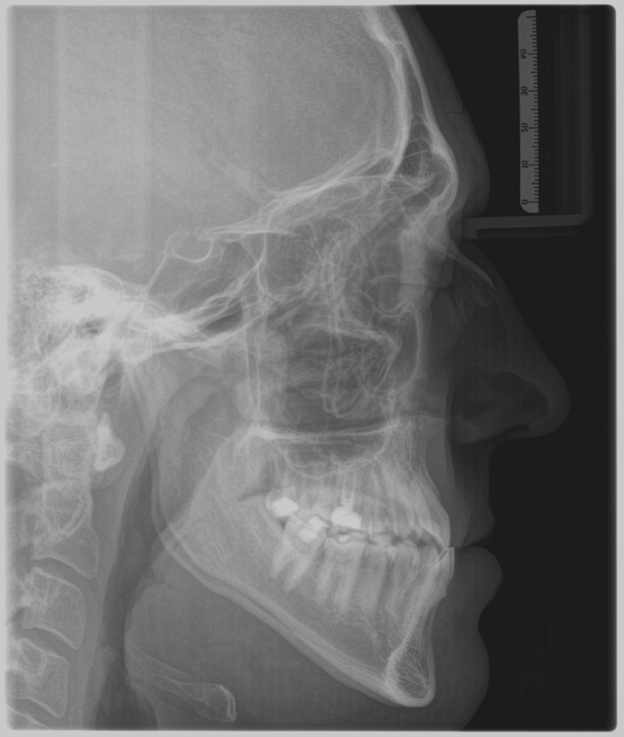

FRS
Führen Sie die kephalometrische Analyse des Fernröntgenseitenbildes durch.
Punkt
Linie
Winkel
Linie ohne mm-Anzeige
Klicken Sie auf einen Punkt – von dort wird eine Senkrechte zur nächsten Linie gezeichnet. Der Endpunkt wird automatisch im rechten Winkel auf die Linie projiziert.

Kalibrierung wird geladen...
Winkel:
Lösungen anzeigen
Zum nächsten Schritt